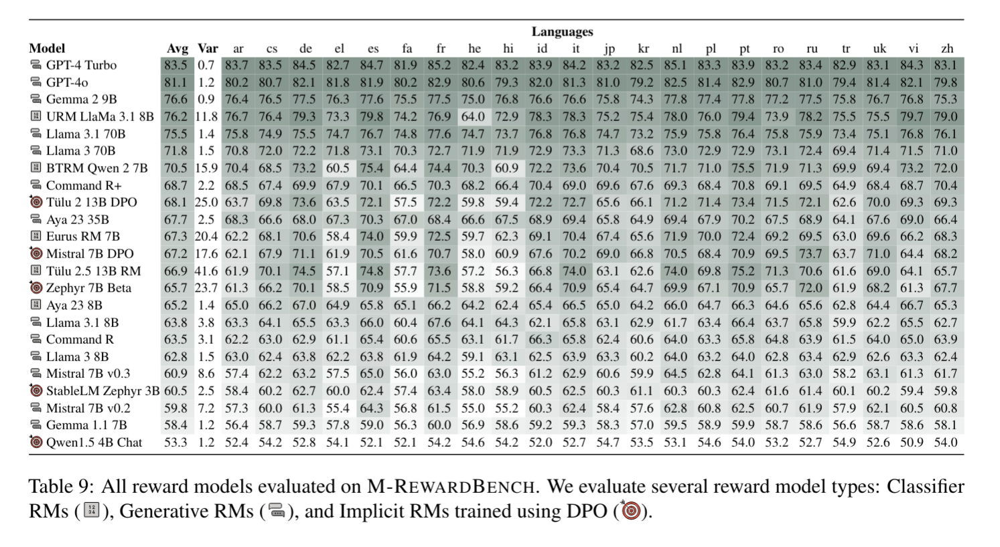

Reward models (RMs) have driven the state-of-the-art performance of LLMs today by enabling the integration of human feedback into the language modeling process. However, RMs are primarily trained and evaluated in English, and their capabilities in multilingual settings remain largely understudied. In this work, we conduct a systematic evaluation of several reward models in multilingual settings. We first construct the first-of-its-kind multilingual RM evaluation benchmark, M-RewardBench, consisting of 2.87k preference instances for 23 typologically diverse languages, that tests the chat, safety, reasoning, and translation capabilities of RMs. We then rigorously evaluate a wide range of reward models on M-RewardBench, offering fresh insights into their performance across diverse languages. We identify a significant gap in RMs’ performances between English and non-English languages and show that RM preferences can change substantially from one language to another. We also present several findings on how different multilingual aspects impact RM performance. Specifically, we show that the performance of RMs is improved with improved translation quality. Similarly, we demonstrate that the models exhibit better performance for high-resource languages. We release the M-RewardBench dataset and the codebase in this study to facilitate a better understanding of RM evaluation in multilingual settings.
@misc{gureja2024mrewardbench,
title={M-RewardBench: Evaluating Reward Models in Multilingual Settings},
author={Srishti Gureja and Lester James V. Miranda and Shayekh Bin Islam and Rishabh Maheshwary and Drishti Sharma and Gusti Winata and Nathan Lambert and Sebastian Ruder and Sara Hooker and Marzieh Fadaee},
year={2024},
eprint={2410.15522},
archivePrefix={arXiv},
primaryClass={cs.CL},
url={https://arxiv.org/abs/2410.15522},
}